#6335 John Wick: Kapitel 2
Alternativ: John Wick: Chapter 2
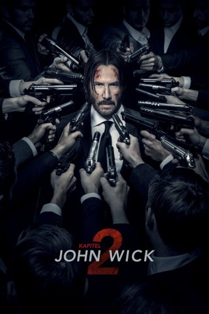 
 IMDB-Wertung: 7.5 / 10
IMDB-Wertung: 7.5 / 10  Metascore: 75
Metascore: 75 
Kurze Zeit nach den Ereignissen aus dem ersten Teil, in dem der ehemalige Auftragskiller John Wick russische Gangster zur Strecke brachte, wird er einmal mehr aus seinem Ruhestand gerissen, als ein früherer Partner von ihm plant, die Kontrolle über eine internationale Gruppe von Profi-Attentätern zu übernehmen. Wegen eines alten Schwurs sieht sich John gezwungen, ihm bei seinem Vorhaben zu unterstützen. Zu diesem Zweck begibt er sich nach Rom, wo bald ein Kopfgeld auf ihn ausgesetzt wird und sich ihm eine ganze Horde der gefährlichsten Killer der Welt in den Weg stellt…
Jahr: 2017
Dauer: 122 Minuten
FSK: 18
Land: USA Studio: Summit EntertainmentTonspuren: DTS - ,
Untertitel: Deutsch, Englisch,
Auflösung: 1080p (1920x800) Größe: 5693 MB
Genre: Action, Thriller, Krimi
Regisseur: Chad Stahelski
Drehbuch: Mirada
Soundtrack:
Darsteller:
 Keanu Reeves als John Wick
Keanu Reeves als John Wick Riccardo Scamarcio als Santino D'Antonio
Riccardo Scamarcio als Santino D'Antonio- 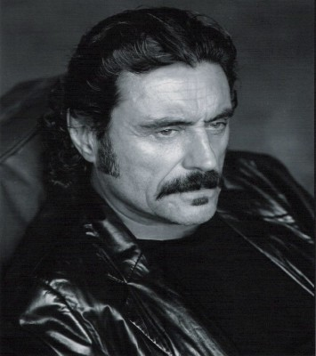 Ian McShane als Winston
- 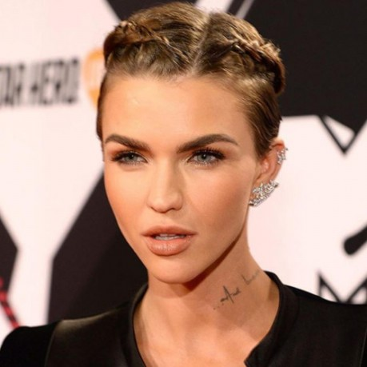 Ruby Rose als Ares
- 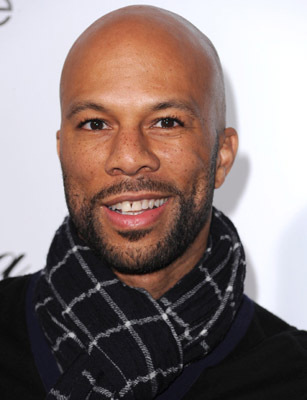 Common als Cassian
- 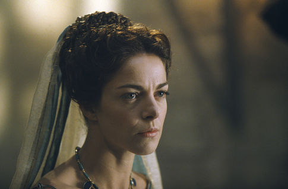 Claudia Gerini als Gianna D'Antonio
 Lance Reddick als Charon
Lance Reddick als Charon Laurence Fishburne als Bowery King
Laurence Fishburne als Bowery King- 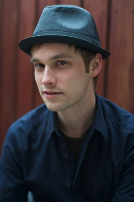 Tobias Segal als Earl
 John Leguizamo als Aurelio
John Leguizamo als Aurelio Bridget Moynahan als Helen
Bridget Moynahan als Helen- Thomas Sadoski als Jimmy
 David Patrick Kelly als Charlie
David Patrick Kelly als Charlie- Perry Yung als Doctor
- 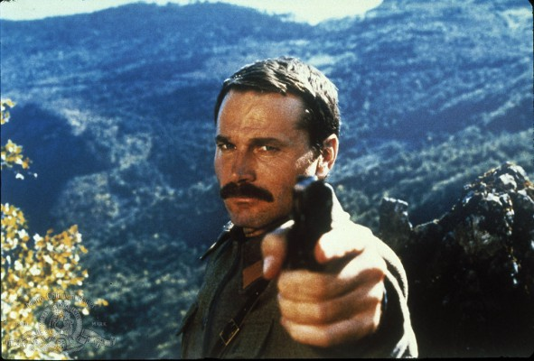 Franco Nero als Julius
- 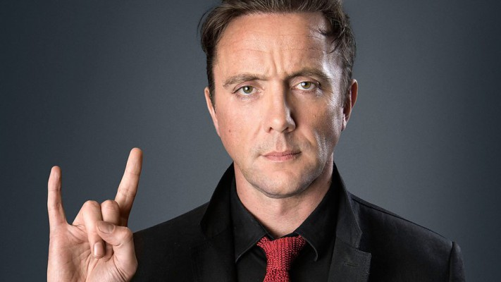 Peter Serafinowicz als Sommelier
- Luca Mosca als Italian Tailor
- Mario Donatone als Cardinal
 Elli als Pawnbroker
Elli als Pawnbroker- Chukwudi Iwuji als Akoni
 Peter Stormare als Abram
Peter Stormare als Abram- Chris LaPanta als Earl's Guard #1
- Guyviaud Joseph als Earl's Guard #2
- Kelly Rae LeGault als Switchboard Operator #2
- 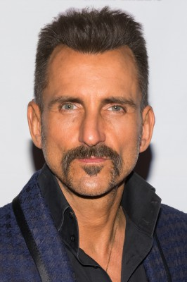 Wass Stevens als Consiglieri
 Marko Caka als Businessman
Marko Caka als Businessman- Victor Competiello als Italian Tailor
- Emmanuel Todorov als Russian Cabbie
 Peter Arpesella als Italian guest , uncredited
Peter Arpesella als Italian guest , uncredited- 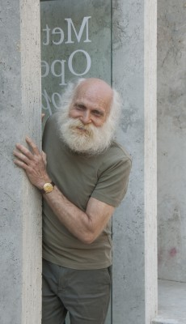 Joel Brody als Undercover Homeless Man , uncredited
- Nancy Cejari als Business Woman , uncredited
- 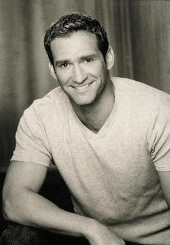 Tim Connolly als Ares Team #2 , uncredited
 Kitty Crystal als Switchboard Operator , uncredited
Kitty Crystal als Switchboard Operator , uncredited- Jennifer Dong als Cocktail Waitress , uncredited
- Anthony Romeo Garcia als Tourist , uncredited
- Daniel Garcia als Parent , uncredited
- Patricia Hodges als Wall Street Businesswoman , uncredited
 Faith Logan als Bar Patron , uncredited
Faith Logan als Bar Patron , uncredited- Aly Mang als Winston's Personal Assistant , uncredited
 Doris McCarthy als Park Lady , uncredited
Doris McCarthy als Park Lady , uncredited- Gary McNerney als Suburban Father , uncredited
- Frank Modica als Park Goer / Assassin , uncredited
- Heidi Moneymaker als Assassin , uncredited
- Angel Pai als Assassin , uncredited
- Christopher Parker als Garbage Man #1 , uncredited
- Oleg Prudius als Russian Assassin , uncredited
- 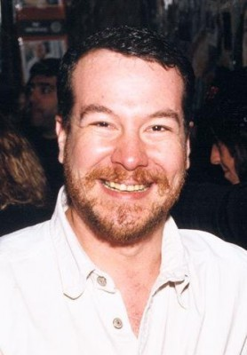 Shade Rupe als Opera Attendee , uncredited
- 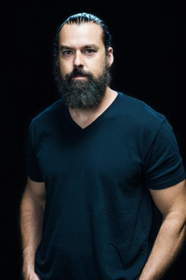 Kenny Sheard als Ares Team , uncredited
- Nobuya Shimamoto als Assassin , uncredited
- Nico Toffoli als Brian Blackman , uncredited
Datei: X:\FSK18-Collections\John Wick\John Wick Kapitel 2 (2017, FSK18, 1920x800).mkv seit 08.06.2017
Festplatte: FSK18
 Alle Filme aus Gruppe 'FSK18-Collections\John Wick'
Alle Filme aus Gruppe 'FSK18-Collections\John Wick'